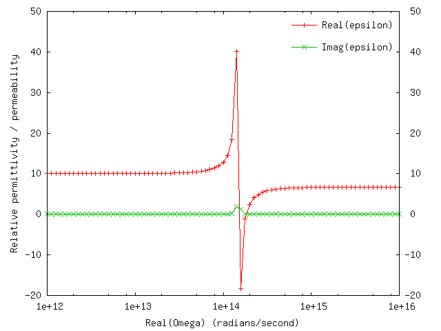

Material descriptions in scuff-em
scuff-em allows the frequency-dependent electrical properties (dielectric permittivity and magnetic permeability) of materials to be specified in one of several ways:
- You can use a built-in material like
PECorVacuum. - You can specify a material with constant (frequency-independent) permittivity and permeability.
- You can specify a data file containing tabulated permittivity and permeability values over a range of frequencies; in this case, scuff-em will interpolate between values in your file to estimate material properties at arbitrary frequencies.
- You can define your own material with arbitrary frequency-dependent material properties, specified using mathematical expressions.
Materials are generally specified to scuff-em by including a line like
MATERIAL MyMaterialName
in the
.scuffgeo file;
here MyMaterialName is a string constructed in different
ways depending on which of the above types of material specification
you have in mind, as detailed below.
Note that material specification in scuff-em are
case-insensitive. The strings TEFLON, Teflon, and teflon all
refer to the same material.
Note also that the values of the permittivity and permeability described by scuff-em material designations are always the dimensionless relative permittivity and permeability, with values of 1 in vacuum.
- Built-in materials
- Frequency-independent materials
- Materials specified using tabulated data
- User-defined materials
- scuff-plotepseu: A command-line utility for verifying material properties
Material specifications in scuff-em
1. Built-In Materials
The two built-in materials are Vacuum and
PEC. The former describes a material with
at all frequencies, while the latter describes
a Perfect Electrical Conductor.
2. Frequency-independent materials
For a non-magnetic material with frequency-independent permittivity , you can use a material specification of the form
MATERIAL CONST_EPS_11.8
where you would replace 11.8 with the constant value
of the permittivity. (Note that CONST_EPS_11.8
is all one word, with no spaces.)
For a material with frequency-independent permittivity and frequency-independent permeability , you can use a material-property designation of the form
MATERIAL CONST_EPS_11.8_MU_0.8
where you would replace 0.8 with the constant value
of the permeability. (Again, all one word, no spaces.)
You can also specify materials with negative and/or complex permittivity:
MATERIAL CONST_EPS_-54+46i
Of course, a dielectric function with a frequency-independent imaginary part is unphysical, but no problems will arise as long as you are only doing computations at a single frequency.
3. Materials specified using tabulated data
If you have tabulated frequency data for the permittivity and/or permeability of your material, you can specify this to scuff-em using a material specification of the form
MATERIAL FILE_MyDataFile.dat
where the FILE_ part of the string is fixed, and the
remainder is the name of your data file (which is of course case-sensitive.)
Again, note that the material property specification is all one word with
no spaces.
The data file is interpreted by scuff-em in the following way:
- Blank lines and comments (lines beginning with
#) are ignored. - All other lines must contain either two or three space-separated strings, which are interpreted as
Omega Epsilon(Omega) [Mu(Omega)]
where Omega is an angular frequency, Epsilon(Omega) is the relative permittivity at that frequency, and the optional Mu(Omega) is the relative permeability.
The values specified for Eps and Mu may be complex numbers..
Note that values in material data files are always specified
in units of radians per second, not the specialized frequency
units that are used in scuff-em application codes. For
example, an angular frequency of rad/sec would
be specified as 1.0 in (for example) the --omega argument
to scuff-scatter, but as 3.0e14 in a material data file.
For example, suppose you have tabulated data for the
frequency-dependent permittivity of silver over a finite
range of frequencies. Put those data into a text file
called (for example) Silver.dat
with the angular frequencies (in radians per second)
on the first column, and the complex relative permittivity
on the second column, so that the data file looks something
like this:
2.5133e15 -28.832+0.39369i
2.6180e15 -26.235+0.35815i
...
5.2360e15 -2.3459+0.23547i
5.3855e15 -1.7349+0.24727i
This says that, for example, at angular frequency we have relative permittivity
Then your .scuffgeo file may refer to a material
named FILE_Silver.dat, whose dielectric function at
arbitrary frequencies will be obtained by
interpolating the data specified in your data file.
For example, to describe a sphere made of this material
your ``.scuffgeo'' file could contain a section like
OBJECT SilverSphere
MESHFILE Sphere.msh
MATERIAL FILE_Silver.dat
ENDOBJECT
Note: If you are doing calculations at imaginary frequencies
(in scuff-cas3d, scuff-caspol, or scuff-scatter with
an imaginary value specified for --omega)
and you have tabulated data for the relative permittivity
on the imaginary frequency axis, you can play exactly the
same game described above, except that now the
values on the first column of the data file will be
pure imaginary (they will end in i or I).
(Also, on physical grounds the relative permittivity at
each frequency should be real-valued and positive in this
case).
4. User-defined materials
For more general materials, you will want to define your own
frequency-dependent material designations. You do this by
first creating an entry in a database file that describes
your material, and then referring back to that entry in
.scuffgeo files and anywhere else you need to
specify a material property designation. (Alternatively,
you can define the material on-the-fly inside a
MATERIAL...ENDMATERIAL section in your .scuffgeo file.
See here for more details.
The location of the database file
libmatprop looks in the following three places for its database file:
-
The file
${HOME}/.matprop.dat(i.e. a file named.matprop.datin the top-level directory for your user account.) -
The file named by the environment variable
SCUFF_MATPROPFILE. -
A file named
matprop.datin the current working directory. (Note the absence of a leading period as compared with the previous item.)
Personally, I think the first or second of these options is the most convenient; they allow you to create and maintain a single database file that contains all the common materials you will ever need to use.
Entries in the database file
A typical entry in the database file looks like this:
MATERIAL SiliconCarbide
EpsInf = 6.7;
a0 = -3.32377e28;
a1 = +8.93329e11;
b0 = -2.21677e28;
b1 = 8.93329e11;
Eps(w) = EpsInf * ( w^2 + a1*i*w + a0 ) / ( w^2 + b1*i*w + b0);
ENDMATERIAL
The first line defines the name of the material (the name you
would supply as an argument to the MATERIAL keyword
in a .scuffgeo file, for example).
The next few lines define some constants. These constant
definitions are specific to this particular MATERIAL;
two different MATERIAL sections in the database
file may define the same constant to have two different values.
The line Eps(w) = ... defines the
frequency-dependent relative permittivity of your material.
The expression to the right of the = sign is
parsed and interpreted as a function
of the single variable w, the angular frequency.
The expression may refer to any of the constants you have defined
for the present material; it may also use the symbols
i and I to denote the imaginary unit.
Again, values in material property specifications are always interpreted in units of radians per second, not the specialized angular-frequency units that are used in some of the scuff-em application codes.
If your material has , you may optionally also include a line of the form
Mu(w) = some-function(w)
A Sample Database File
Here is a sample database file:matprop.dat.
I recommend you rename this file to ${HOME}/.matprop.dat and
augment it as necessary for your applications.
5. scuff-plotEpsMu: A command-line utility for verifying material properties
The scuff-em distribution comes with an application program named
scuff-plotEpsMu that you
can use to make sure that a material property designation is
interpreted the way you intended. You can run this command with
no arguments to get usage information:
% scuff-plotEpsMu
error: --material option is mandatory (aborting)
usage: scuff-plotEpsMu [options]
options:
--material xx (name of material)
--OmegaMin xx (minimum angular frequency)
--OmegaMax xx (maximum angular frequency)
--gnuplot (use GNUPLOT to plot results)
--geometry xx (.scuffgeo file containing material definition)
Running scuff-plotEpsMu --material MyMaterial
will produce an output file name MyMaterial.epsmu,
which will contain 7 columns of data, representing the
permittivity and permeability of your material at various
angular frequencies on both the real and imaginary ω
axes:
| Column | 1 | 2 | 3 | 4 | 5 | 6 | 7 |
|---|---|---|---|---|---|---|---|
| Quantity | ω | Re ε(ω) | Im ε(ω) | Re μ(ω) | Im μ(ω) | ε(iω) | μ(iω) |
If gnuplot is installed on your system,
then you can use the --GnuPlot option to generate pop-up
plots of and vs.
for your material.
You can use --OmegaMin/--OmegaMax to set the
range of angular frequencies over which material properties
will be plotted. The defaults are equivalent to specifying
--OmegaMin 1e8 and --OmegaMax 1e16,
respectively.
If your material is defined on-the-fly in a .scuffgeo
file, you can pass that file to scuff-plotEpsMu using
the --geometry option. (If your material is defined
in a material database file
then this option is not needed.)
For example, in
this example
we used a material named SiliconCarbide, which was defined
in a geometry file named SiCSphere.scuffgeo. To check the
the frequency-dependent permittivity of this material, we can say
% scuff-plotEpsMu --material SiliconCarbide --geometry SiCSphere.scuffgeo --gnuplot
This will pop up four graphs, of which one looks something like this:
